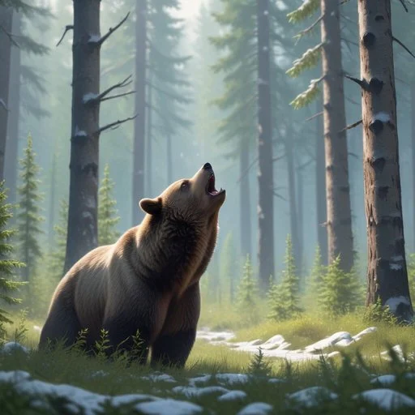
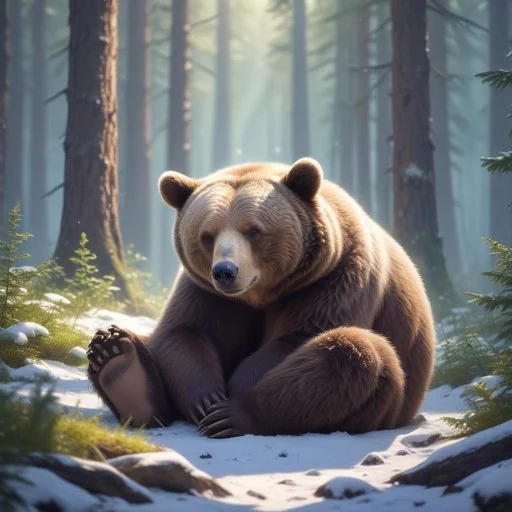
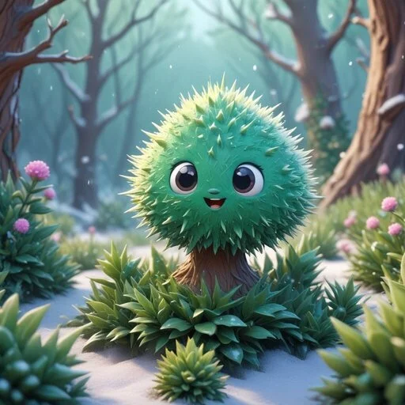
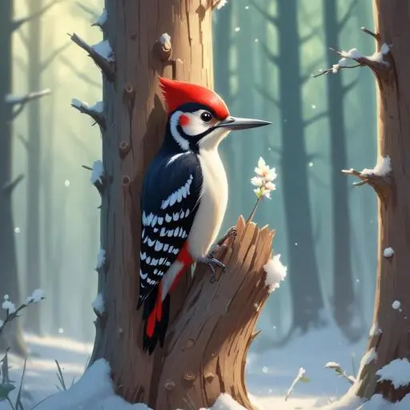
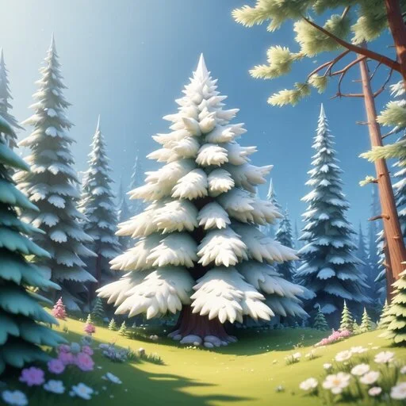
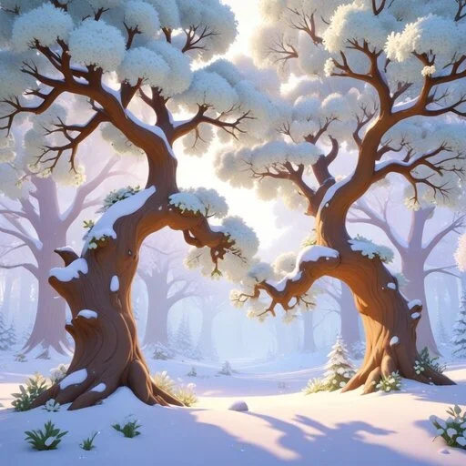

Geheimnisvolle Klopfen
Begegnung mit einem wütenden Bären
Die Abenteuergemeinschaft sitzt gemeinsam mit ihren Freunden am Lagerfeuer in einer Lichtung des Waldes Silvaria. Sie geniessen den lauschigen Abend. Es ist Winter und das Feuer wärmt die Gspänli.
Plötzlich erklingt ein lauter Radau und ein wütender Bär kommt ins Lager gestürmt. Er schlägt um sich und brüllt.
Beruhigt den Bären.
Die Probe ist erfolgreich: Der Bär beginnt zu erzählen.
Die Probe ist gescheitert: Der Bär wütet weiter. Er schlägt eine Feuerstelle und das Nusslager der Eichhörnchen kaputt, das sie am Rande der Lichtung gebaut haben. Langsam beruhigt der Bär sich von selbst und lässt sich weinend auf den Hintern plumpsen.
Der Bär beginnt zu erzählen:
Mein Name ist Wuschel und ich war mitten im Winterschlaf. Plötzlich wurde ich von einem seltsamen Klopfen geweckt. Es hat nicht mehr aufgehört und ich konnte nicht mehr weiterschlafen. Ich brauche doch meinen Winterschlaf! Ich weiss nicht, was es ist. Ich irre schon zwei Tage im Wald herum, um Hilfe zu suchen. Könnt ihr mir helfen herauszufinden, woher das Klopfen kommt?
Der Weg zur Höhle
Die Abenteuergemeinschaft macht sich auf den Weg. Begleitet werden Sie von Wuschel, dem Bären. Er führt die Gruppe auf dem direktesten Weg zu seiner Höhle. Er ist ruhiger und froh, dass ihr ihm helft. Allerdings ist er auch sehr müde, da er in seinem Schlaf gestört wurde. So ist er etwas langsam und manchmal auch verwirrt.
Plötzlich steht die Abenteuergemeinschaft vor einem riesigen Dornengebüsch. Die Gspänli schauen Wuschel an.
Wuschel der Bär sagt:
Dieses Gebüsch habe ich noch nie gesehen. Ist das gewachsen, während ich geschlafen habe? Jedenfalls gehen wir in die richtige Richtung und das Gebüsch zu umgehen wäre ein grosser Umweg.
Überwindet das Gebüsch.
Die Probe ist erfolgreich: Die Gspänli erreichen unversehrt die andere Seite.
Die Probe ist gescheitert: Während die Gspänli das Gebüsch versuchen zu überwinden, ziehen sie sich Verletzungen zu. Jene, die die Probe nicht schaffen, verlieren 1 Ausdauer.
Wuschel der Bär sagt:
Hu, das ist geschafft. War ganz leicht, oder? Kommt, hier geht's lang!
Wuschel führt die Abenteuergemeinschaft zügig weiter. Inzwischen ist es schon ziemlich dunkel. Wuschel wird immer langsamer. Die Gspänli sehen, dass ihm die Augen schon fast zufallen.
Wuschel der Bär sagt:
Ich bin so müde. Können wir nicht irgendwo rasten? Kennt ihr hier einen Rastplatz?
Findet einen Rastplatz (2).
Die Probe ist erfolgreich: Die Abenteuergemeinschaft findet selbst einen Platz oder sie sprechen erfolgreich mit einem Waldtier, das ihnen einen Platz zeigt. Alle erhalten 1 Ausdauer.
Die Probe ist gescheitert: Die Abenteuergemeinschaft findet keinen Schlafplatz. Wuschel kippt um und schläft wie ein Stein. Er schnarcht und lässt sich nicht mehr wecken. Die Gspänli müssen dort schlafen, wo sie jetzt sind. Alle verlieren 1 Ausdauer.
An der Höhle
Am nächsten Morgen werden die Gspänli von einem putzmunter Wuschel geweckt.
Wuschel der Bär sagt:
Los, kommt. Es ist nicht mehr weit.
Die Gruppe marschiert weiter und schon bald hören sie ein lautes, schnelles und andauerndes Klopfen.
Wuschel der Bär sagt:
Hört ihr das? Dieses Klopfen? Ich habe es doch gesagt. Es ist so unerträglich! Findet bitte heraus, woher es kommt.
Findet heraus woher das Klopfen kommt.
Die Probe ist erfolgreich: Die Abenteuergemeinschaft sieht einen Specht.
Die Probe ist gescheitert: Die Abenteuergemeinschaft findet nichts heraus. Sie suchen weiter. Plötzlich kommt ein Eichhörnchen vorbei. Es sagt
Hallo ihr, ich heisse Sid. Euch habe ich ja noch nie in dieser Gegend gesehen. Habt ihr etwa eure Vorräte noch nicht gesammelt oder was führt euch hierher?
Sid erklärt dann der Abenteuergemeinschaft, woher das Klopfen kommt und zeigt auf den Specht.
Specht Albrecht
Der Specht bemerkt die Gspänli. Er fliegt zu ihnen hin.
Der Specht sagt:
Hallo zusammen, ich bin Albrecht, der Specht. Was führt euch zu mir? Gefällt euch mein Klopfen?
Überzeugt Albrecht, an einem anderen Ort zu klopfen.
Die Probe ist erfolgreich: Albrecht der Specht sagt:
Gut, ich verstehe euer Anliegen. Auch wenn es mir schwer fällt, weiterzuziehen, werde ich es Wuschel zuliebe tun. Aber bevor ich den Platz verlasse möchte ich noch etwas Spass mit euch allen haben.
Die Probe ist gescheitert: Albrecht der Specht sagt:
Nein, ich mag meinen Platz hier. Ich möchte bleiben. Das sind gute Bäume zum Klopfen. Sie haben einen so wundervollen Ton. Aber es scheint euch wichtig zu sein. Ich schlage euch ein Wettrennen vor. Wenn ihr gewinnt, gehe ich ansonsten bleibe ich.
 
Albrecht der Specht schlägt folgendes vor:
Es geht so: Wir gehen von hier bis zu der grossen Tanne da vorne. Dort drehen wir um. Wer zuerst wieder hier ist, hat gewonnen. Klingt einfach, oder? Aber Achtung, es hat noch zwei Hindernisse. Seht ihr da die vielen Bäume? Da müssen wir durch. Das wird nicht ganz einfach. Und da drüben über dem Teich hat es einen riesigen Mückenschwarm. Auch das erschwert das Vorankommen. Aber nun starten wir. Ist alles klar?
Der Wettflug besteht aus folgenden Teile-Strecken, wobei für jeden Teil-Strecke die Probe eines Gspänli notwendig ist.
- Gerade bis zu den dichten Bäumen.
- Weg durch die dichten Bäume finden.
- Um den Baum herum.
- Durch den Mückenschwarm.
- Gerade ins Ziel.
Gewinnt gegen Albrecht
Mindestens 3 Proben erfolgreich: Die Gspänli gewinnen. Weniger als 3 Proben erfolgreich: Die Gspänli kommen nicht so schnell voran.
Wenn die Gspänli gewonnen haben, sagt Albrecht der Specht:
Wow, ihr seid ja schnell! Wie versprochen suche ich mir einen anderen Platz zum Klopfen. Vielleicht sehen wir uns im Frühling wieder, wenn du ausgeschlafen hast. Was meinst du, Wuschel?
Wuschel der Bär antwortet:
Sehr gerne, ich habe ja nichts gegen dich persönlich. Ich brauche einfach meinen Schlaf.
Wenn die Gspänli verloren haben, sagt Albrecht der Specht:
Ha, kein Tier ist so schnell wie ich. Ich wusste, dass ich gewinne. Ich habe mir meinen Platz wahrlich verdient.
Albrecht sieht euch an, dann Wuschel. Er erkennt, dass für den armen Bären eine Welt zusammenbricht.
Albrecht der Specht sagt:
Weisst du was, Wuschel. Auch wenn ich gewonnen habe, suche ich mir über den Winter einen anderen Platz zum Klopfen. Es gibt auch noch viele andere schön klingende Bäume in diesem Wald. Aber ich erwarte dass deine Freunde mir dabei helfen etwas neues zu suchen.
Glückliches Ende
Wuschel der Bär sagt:
Vielen Dank euch allen und auch dir lieber Albrecht. Ich kann nun weiterschlafen. Im Sommer komme ich bei euch vorbei und zeige mich erkenntlich. Vielleicht kann ich euch dann mit meiner Kraft unterstützen? Die Störung hatte bei allem doch etwas Gutes: Ich habe tolle Freunde gefunden und nun freue ich mich doppelt auf den Sommer.
Die Gspänli bekommen von Wuschel einen Freundschaftsstein.
Mit diesen Worten verschwindet Wuschel in seiner Höhe. Kurze Zeit später hören die Gspänli ein lautes Schnarchen. Sie können sich nun beruhigt auf den Rückweg machen und freuen sich ebenfalls auf den Sommer, wenn sie Wuschel wiedersehen werden.
In Kürze
Hauptrollen
- Wuschel der Bär
- Das Eichhörnchen Sid
- Albrecht der Specht
Geschichte
- Es ist fast schon Winter
- Wuschel der Bär macht lauten Radau und beschwert sich über laute Geräusche
- Die Abenteuergruppe versucht Wuschel den Bär zu beruhigen 🎲
- Wuschel bringt die Gspänli ein riesiges Gebüsch welches die Gruppe überwinden muss 🎲
- Wuschel ist sehr Müde, sie müssen ein Platz zum schlafen finden
- Am nächsten morgen hört die Abenteuergruppe ein Klopfen 🎲
- Entweder finden sie den Specht Albrecht selber, oder Sid das Eichhörnchen gibt der Gruppe einen Tipp
- Die Gspänli findet Albrecht den Specht
- Die Gspänli versuchen Albrecht davon zu überzeuge den Ort zu verlassen 🎲
- Er verlässt den Ort nach einem Wettrennen 🎲
- Zu den zwei zusammengewachsenen Eichen, um die grosse Weisstanne, durch den Mückenschwarm, zurück ins Ziel
- Albrecht sucht sich einen anderen Platz
- Die Gspänli schliessen eine Freundschaft mit Wuschel dem Bär 💗
- Wuschel geht schlafen um im nächsten Frühling ein Fest zu machen